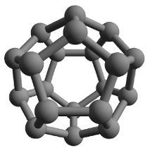

1) Escreva cada logaritmo na forma de potência.
a) log2 8 = 3 ⇔ b) log3 81 = 4 ⇔
c) log5 25 = 2 ⇔ d) log4 2 = 1/2 ⇔
2) Escreva cada potência na forma de logarítmo.
a) 24 = 16 ⇔ b) 53 = 125 ⇔
c) 34 = 81 ⇔ d) 72 = 49 ⇔
3) Calcule os seguintes logaritmos.
a) log2 32 = h) log8 2 =
b) log7 2401 = i) log 10000 =
c) log5 625 = j) log3 1 =
d) log3 243 = k) log497 1 =
e) log3 1/9 = l) log18 18 =
f) log4 1/64 = m) log1567 1567 =
g) log16 4 =
4) Complete a tabela de logaritmos na base 3.
a) log3 1 = f) log3 6 =
b) log3 2 = 0,6309 g) log3 7 = 1,7712
c) log3 3 = h) log3 8 =
d) log3 4 = i) log3 9 =
e) log3 5 = 1,4650 j) log3 10 =
5) Use a tebela do exercício 4 e a propriedade de mudança de base para completar a tabela abaixo.
a) log2 1 = f) log2 6 =
b) log2 2 = g) log2 7 =
c) log2 3 = h) log2 8 =
d) log2 4 = i) log2 9 =
e) log2 5 = j) log2 10 =
6) Sabendo que log 2 ≅ 0,3 e log 5 ≅ 0,7, determinar o valor aproximado de:
a) log (5/2) = b) log 20 =
c) log √5 = d) log 0,4 =
7) Sabendo que 9x = 5, calcule o valor de x.
(Dica: use uma das tabelas anteriores.)
8) Medicina. Para calcular o pH do sangue humano,
pode-se utilizar a fórmula de Henderson-Hasselbach, dada por:
pH = 6,1 + log (B/C), em que B representa a concentração de bicarbonato,
substância básica (ou alcalina) e C representa a concentração
de ácido carbônico, substância ácida, ambos em mmol/l.
Em geral, o pH do sangue humano é igual a 7,4 (levemente básico).
Usando informações das questões anteriores, calcular o pH do sangue de uma pessoa
cuja concentração de bicarbonato é 25 mmol/l e cuja concentração de ácido
carbônico é 2 mmol/l.
9) Som. A lei que mede o ruído é definida pela
expressão R = 120 + 10 · log I, em que I é a intensidade sonora, medida em W/m²,
e R é medida do ruído, em decibel (dB).
O quadro abaixo mostra o ruído de algumas fontes de som
| Fonte de Som | Ruído |
| Avião a jato próximo | 150 dB |
| Britadeira | 130 dB |
| Limiar da dor | 120 dB |
| Conversa moderada | 40 dB |
| Limiar da audição | 0 dB |
10) Terremoto. A magnitude M de um terremoto, medida na escala Richter, é dada pela fórmula M= (2/3) · log (E/E0), em que E é a energia liberada pelo terremoto em quilowatt-hora e E0 = 7 × 10-3 kWh = 0,007 kWh.
| Magnitude | Resultado no epicentro | N.º(por ano) |
| 1,0 - 1,9 | Detectável apenas por sismógrafo | muitos |
| 2,0 - 2,9 | Sentido por algumas pessoas | 800 000 |
| 3,0 - 3,9 | Sentido pela maioria das pessoas | 20 000 |
| 4,0 - 4,9 | Vidros partidos | 2 800 |
| 5,0 - 5,9 | Queda de mobiliário | 1 000 |
| 6,0 - 6,9 | Fendas no chão, queda de edifícios | 185 |
| 7,0 - 7,9 | Queda de pontes e barragens | 14 |
| >8,0 | Desastre em larga escala | 0,2 |
11) Finanças. Ao aplicar um capital C durante n unidades de tempo (dia, mês, ano etc.)
à taxa de juros i por unidade de tempo, obtém-se o montante M (capital inicial mais juros) acumulado
ao final da aplicação. A fórmula para o cálculo desse montante é M = C · (1 + i)n.
Determine durante quanto tempo o capital inicial de R$ 10.000,00 esteve aplicado à taxa de juro de 5%
ao mês, gerando o montante de R$ 13.400,00.
(Use: log 1,34 = 0,12 e log 1,05 = 0,02.)
12) Um poliedro convexo possui 7 faces e 16 arestas. Quantos vértices ele possui?
13) Um hexaedro convexo possui 10 vértices. Quantas arestas ele possui?
14) Qual o nome de um poliedro regular que possui 6 vértices e 9 arestas?
15) Um poliedro convexo possui 3 faces quadrangulares, 2 faces triangulares e 2 faces pentagonais. Determine:
a) quantas faces ele possui.
b) quantas arestas ele possui.
c) quantos vértices ele possui.
16) Um poliedro convexo tem 1 ângulo triédrico, 3 ângulos tetraédricos e 2 ângulos pentaédricos. Determine:
a) quantos vértices ele possui.
b) quantas arestas ele possui.
c) quantas faces ele possui.
17) Um icosaedro será montado numa aula de matemática usando canudos como arestas. Sabendo que um icosaedro possui 20 faces triangulares, quantos canudos serão necessários para construí-lo?
18) Qímica. O fulereno é um tipo de molécula tridimensional formada apenas por átomos de
carbono. Um exemplo é o C20, que possui 20 átomos de carbono. Estes átomos estão ligados
de forma que a estrutura é um dodecaedro de faces pentagonais. Quantas ligacões químicas entre carbonos
ocorrem nessa estrutura do C20?

19) Futebol. Uma bola de futebol tem o formato de um icosaedro truncado. Ela é composta por
12 gomos pentagonais (pretos) e 20 gomos hexagonais (brancos). Supondo que se use 20 cm de linha para
costurar o lado de um gomo no outro, quantos metros de linha são necessários para construir uma bola
de futebol?